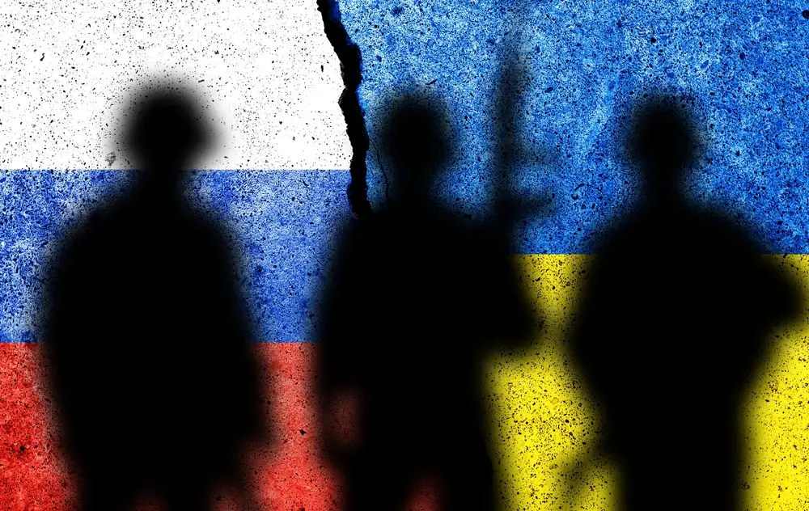

01
How the war began
In February 2022, Russia started a full-scale invasion of Ukraine. Russia had also taken Crimea in 2014. The UN Secretary-General said the invasion was a very serious violation of the UN Charter; the rules that countries agreed to follow. Millions of people had to run from their homes.